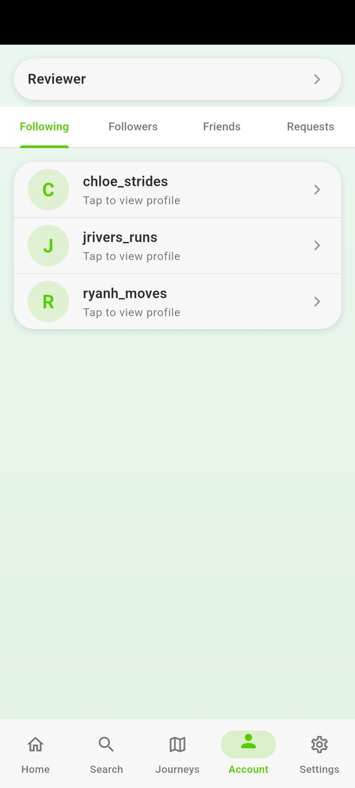

Journey Together
A step-tracking app you use with your friends rather than alone. On the App Store and Google Play.
Why it exists
My friends and I wanted to set step goals together and could not find anything that did it the way we meant it. Step counters are built around one person and their own numbers; the social ones mostly amount to a leaderboard, which turns walking with your friends into competing with them.
What we actually wanted was a shared target that everyone contributes to. So a journey is a step goal you take on as a group — a million steps, say — drawn as a path across a painted landscape, with a marker for each person moving along it as they walk. You can see how everyone is doing without it being a ranking. Alongside that there is the ordinary daily side: your own count, a streak, a goal, and a week at a glance.
What it looks like



Built with
- Flutter and Dart. One codebase for both platforms, which is the only reason a project this size ships on iOS and Android at all rather than picking one.
- Firebase. Authentication for accounts, Firestore for the data, and Crashlytics and Analytics for finding out what breaks once it is on other people’s phones rather than mine.
- Health Connect on Android and Apple Health on iOS. So the step count can come from the phone the person already carries, rather than being typed in.
Health data needed real care
This is the part that made it different from anything I had built before. Steps are health data, and both stores treat them that way: you declare what you read, why you read it, and where it goes, and the declaration has to keep matching the code as the app changes.
The decisions that followed from taking that seriously:
- Read steps and nothing else. The health permissions are opt-in, and steps are the only thing behind them. An early version also read distance; when that turned out to be unused, the read came out rather than staying because it was already there.
- Keep usage data unlinkable. The account ID is deliberately never passed to Analytics, so what the app records about how it is used cannot be tied back to a particular person’s account.
- No tracking, and no advertising features. Which is a choice with consequences — it is also what lets the app say it does not track you and mean it.
- Keep the privacy policy honest. Harder than it sounds: after the distance read was removed, the published policy still said distance might be read. Wrong in the user’s favour, but still wrong, and it stayed wrong until I went looking. The policy now gets checked whenever what the app reads changes.
Still going
It is on both stores and I am still working on it, so treat the screenshots as a snapshot rather than a spec.